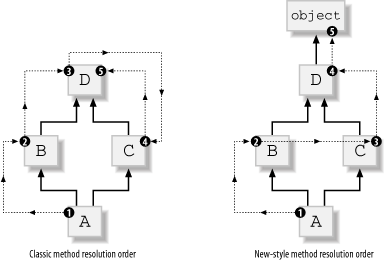

| [ Team LiB ] |
|
5.2 New-Style Classes and InstancesMost of what I have covered so far in this chapter also holds for the new-style object model introduced in Python 2.2. New-style classes and instances are first-class objects just like classic ones, both can have arbitrary attributes, you call a class to create an instance of the class, and so on. In this section, I'm going to cover the few differences between the new-style and classic object models. In Python 2.2 and 2.3, a class is new-style if it inherits from built-in type object directly or indirectly (i.e., if it subclasses any built-in type, such as list, dict, file, object, and so on). In Python 2.1 and earlier, a class cannot inherit from a built-in type, and built-in type object does not exist. In Section 5.4 later in this chapter, I cover other ways to make a class new-style, ways that you can use in Python 2.2 or later whether a class has superclasses or not. As I said at the beginning of this chapter, I suggest you get into the habit of using new-style classes when you program in Python 2.2 or later. The new-style object model has small but measurable advantages, and there are practically no compensating disadvantages. It's simpler just to stick to the new-style object model, rather than try to decide which model to use each time you code a new class. 5.2.1 The Built-in object TypeAs of Python 2.2, the built-in object type is the ancestor of all built-in types and new-style classes. The object type defines some special methods (as documented in Section 5.3 later in this chapter) that implement the default semantics of objects:
A subclass of object may override any of these methods and/or add others. 5.2.2 Class-Level MethodsThe new-style object model allows two kinds of class-level methods that do not exist in the classic object model: static methods and class methods. Class-level methods exist only in Python 2.2 and later, but in these versions you can also have such methods in classic classes. This is the only feature of the new-style object model that is also fully functional with classic classes in Python 2.2 and later. 5.2.2.1 Static methodsA static method is a method that you can call on a class, or on any instance of the class, without the special behavior and constraints of ordinary methods, bound and unbound, on the first argument. A static method may have any signature: it may have no arguments, and the first argument, if any, plays no special role. You can think of a static method as an ordinary function that you're able to call normally, despite the fact that it happens to be bound to a class attribute. While it is never necessary to define static methods (you could always define a function instead), some programmers consider them to be an elegant alternative to such functions whose purpose is tightly bound to some specific class. You build a static method by calling built-in type staticmethod and binding its result to a class attribute. Like all binding of class attributes, this is normally done in the body of the class, but you may also choose to perform it elsewhere. The only argument to staticmethod is the function to invoke when Python calls the static method. The following example shows how to define and call a static method: class AClass(object):
def astatic( ): print 'a static method'
astatic = staticmethod(astatic)
anInstance = AClass( )
AClass.astatic( ) # prints: a static method
anInstance.astatic( ) # prints: a static method
This example uses the same name for the function passed to staticmethod and for the attribute bound to staticmethod's result. This style is not mandatory, but it's a good idea, and I recommend that you use it. 5.2.2.2 Class methodsA class method is a method that you can call on a class or on any instance of the class. Python binds the method's first argument to the class on which you call the method, or the class of the instance on which you call the method; it does not bind it to the instance, as for normal bound methods. There is no equivalent of unbound methods for class methods. The first formal argument of a class method is conventionally named cls. While it is never necessary to define class methods (you could always alternatively define a function that takes the class object as its first argument), some programmers consider them to be an elegant alternative to such functions. You build a class method by calling built-in type classmethod and binding its result to a class attribute. Like all binding of class attributes, this is normally done in the body of the class, but you may also choose to perform it elsewhere. The only argument to classmethod is the function to invoke when Python calls the class method. Here's how to define and call a class method: class ABase(object):
def aclassmet(cls): print 'a class method for', cls._ _name_ _
aclassmet = classmethod(aclassmet)
class ADeriv(ABase): pass
bInstance = ABase( )
dInstance = ADeriv( )
ABase.aclassmet( ) # prints: a class method for ABase
bInstance.aclassmet( ) # prints: a class method for ABase
ADeriv.aclassmet( ) # prints: a class method for ADeriv
dInstance.aclassmet( ) # prints: a class method for ADeriv
This example uses the same name for the function passed to classmethod and for the attribute bound to classmethod's result. This style is not mandatory, but it's a good idea, and I recommend that you use it. 5.2.3 New-Style ClassesAll features of classic classes, covered earlier in this chapter, also apply to new-style classes. New-style classes also have some additional features with regard to the _ _init_ _ special method, and they all have a _ _new_ _ static method. 5.2.3.1 _ _init_ _A new-style class C that inherits _ _init_ _ from object without overriding it lets you pass arbitrary arguments when you call C, but ignores all of those arguments. This behavior can be somewhat surprising. I suggest you override _ _init_ _ in all new-style classes that directly subclass object, even in those rare cases in which your own class's _ _init_ _ has no task to perform. For example: class C(object):
def _ _init_ _(self): pass
# rest of class body omitted
Now instantiating C( ) without arguments works, but mistakenly trying to pass an argument (e.g., C('xyz')) raises an exception. If class C did not override _ _init_ _, a call C('xyz') would silently ignore the erroneous argument. It's generally best not to silently ignore errors. 5.2.3.2 _ _new_ _Each new-style class has a static method named _ _new_ _. When you call C(*args,**kwds) to create a new instance of a new-style class C, Python invokes C._ _new_ _(C,*args,**kwds). Python uses _ _new_ _'s return value x as the newly created instance. Then, Python calls C._ _init_ _(x,*args,**kwds), but only when x is indeed an instance of C (otherwise, x's state is as _ _new_ _ had left it). Thus, for a new-style class C, the statement x=C(23) is equivalent to the following code: x = C._ _new_ _(C, 23) if isinstance(x, C): C._ _init_ _(x, 23) object._ _new_ _ creates a new, uninitialized instance of the class it receives as its first argument, and ignores any other arguments. When you override _ _new_ _ within the class body, you do not need to add _ _new_ _=staticmethod(_ _new_ _), as you normally would: Python recognizes the name _ _new_ _ and treats it specially in this context. In those rare cases in which you rebind C._ _new_ _ later, outside the body of class C, you do need to use C._ _new_ _=staticmethod(whatever). _ _new_ _ has most of the flexibility of a factory function, as covered earlier in this chapter. _ _new_ _ may choose to return an existing instance or to make a new one, as appropriate. When _ _new_ _ does need to create a new instance, it most often delegates creation by calling object._ _new_ _ or the _ _new_ _ method of another built-in type that is a superclass of C. The following example shows how to override static method _ _new_ _ in order to implement a version of the Singleton design pattern: class Singleton(object):
_singletons = { }
def _ _new_ _(cls, *args, **kwds):
if not cls._singletons.has_key(cls):
cls._singletons[cls] = object._ _new_ _(cls)
return cls._singletons[cls]
Any subclass of Singleton (that does not further override _ _new_ _) has exactly one instance. If the subclass defines an _ _init_ _ method, the subclass must ensure its _ _init_ _ is safe when called repeatedly (at each creation request) on the one and only class instance. 5.2.4 New-Style InstancesAll features of instances of classic classes, covered earlier in this chapter, also apply to instances of new-style classes. In addition, new-style classes may define attributes called properties and a special attribute named _ _slots_ _ that affects access to instance attributes. The new-style object model also adds a special method _ _getattribute_ _ that is more general than the _ _getattr_ _ special method present in both the classic and new-style object models. It also has different semantics for per-instance definition of special methods. 5.2.4.1 PropertiesA property is an instance attribute with special functionality. You reference, bind, or unbind the attribute with the normal syntax (e.g., print x.prop, x.prop=23, del x.prop). However, rather than following the usual semantics for attribute reference, binding, and unbinding, these accesses call methods on instance x that you specify when defining the property using the built-in type property. Here's how to define a read-only property: class Rectangle(object):
def _ _init_ _(self, width, heigth):
self.width = width
self.heigth = heigth
def getArea(self):
return self.width * self.heigth
area = property(getArea, doc='area of the rectangle')
Each instance r of class Rectangle has a synthetic read-only attribute r.area, computed on the fly in method r.getArea( ) by multiplying the sides of the rectangle. The docstring Rectangle.area._ _doc_ _ is 'area of the rectangle'. The property is read-only (attempts to rebind or unbind it fail) because we only specify a get method in the call to property. Properties perform tasks that are similar to those of special methods _ _getattr_ _, _ _setattr_ _, and _ _delattr_ _ (covered in Section 5.3 later in this chapter), but in a faster and simpler way. You build a property by calling built-in type property and binding its result to a class attribute. Like all binding of class attributes, this is normally done in the body of the class, but you may also choose to perform it elsewhere. Within the body of a class C, use the following syntax: attrib = property(fget=None, fset=None, fdel=None, doc=None) When x is an instance of C and you reference x.attrib, Python calls on x the method you passed as argument fget to the property constructor, without arguments. When you assign x.attrib = value, Python calls the method you passed as argument fset, with value as the only argument. When you perform del x.attrib, Python calls the method you passed as argument fdel, without arguments. Python uses the argument you passed as doc as the docstring of the attribute. All arguments to property are optional. When an argument is missing, the corresponding operation is forbidden. For example, in the Rectangle example, we made property area read-only, because we passed only argument fget, not arguments fset and fdel. To obtain similar results for a classic class in Python 2.1, we need to define special methods _ _getattr_ _ and _ _setattr_ _ and in each of them test for attribute name 'area' and handle it specifically. The following example shows how to simulate a read-only property in Python 2.1: class Rectangle:
def _ _init_ _(self, width, heigth):
self.width = width
self.heigth = heigth
def getArea(self):
return self.width * self.heigth
def _ _getattr_ _(self, name):
if name= ='area': return self.getArea( )
raise AttributeError, name
def _ _setattr_ _(self, name, value):
if name= ='area':
raise AttributeError, "can't bind attribute"
self._ _dict_ _[name] = value
5.2.4.2 _ _slots_ _Normally, each instance object x of any class C has a dictionary x._ _dict_ _ that Python uses to let you bind arbitrary attributes on x. To save some memory (at the cost of letting x have only a predefined set of attribute names), you can define in class C a class attribute named _ _slots_ _, which is a sequence (normally a tuple) of strings (normally identifiers).When class C has an attribute _ _slots_ _, a direct instance x of class C has no x._ _dict_ _, and any attempt to bind on x any attribute whose name is not in C._ _slots_ _ raises an exception. Using _ _slots_ _ lets you reduce memory consumption for small instance objects that can do without the ability to have arbitrarily named attributes. Note that _ _slots_ _ is worth adding only to classes that can have so many instances that saving a few tens of bytes per instance is important—typically classes that can have millions, not mere thousands, of instances alive at the same time. Unlike most other class attributes, _ _slots_ _ works as I've just described only if some statement in the class body binds it as a class attribute. Any later alteration, rebinding, or unbinding of _ _slots_ _ has no effect, nor does inheriting _ _slots_ _ from a base class. Here's how to add _ _slots_ _ to the Rectangle class defined earlier, to get smaller (though less flexible) instances: class OptimizedRectangle(Rectangle):
_ _slots_ _ = 'width', 'heigth'
We do not need to define a slot for the area property. _ _slots_ _ does not constrain properties, only ordinary instance attributes—the attributes that would reside in the instance's _ _dict_ _ if _ _slots_ _ wasn't defined. 5.2.4.3 _ _getattribute_ _All references to instance attributes for new-style instances proceed through special method _ _getattribute_ _. This method is supplied by base class object, where it implements all the details of object attribute reference semantics as documented earlier in this chapter. However, you may override _ _getattribute_ _ for special purposes, such as hiding inherited class attributes (e.g., methods) for your subclass's instances. The following example shows one way to implement a list without append in the new-style object model: class listNoAppend(list):
def _ _getattribute_ _(self, name):
if name = = 'append': raise AttributeError, name
return list._ _getattribute_ _(self, name)
An instance x of class listNoAppend is almost indistinguishable from a built-in list object, except that performance is substantially worse, and any reference to x.append raises an exception. The following example shows how to implement _ _getattr_ _, _ _setattr_ _, and _ _delattr_ _ so that _ _getattr_ _ is called on every attribute reference, just like _ _getattribute_ _ is for new-style instances: class AttributeWatcher:
def _ _init_ _(self):
# note the caution to avoid triggering _ _setattr_ _, and the
# emulation of Python's name-mangling for a private attribute
self._ _dict_ _['_AttributeWatcher_ _mydict']={ }
def _ _getattr_ _(self, name):
# as well as tracing every call, for demonstration purposes we
# also fake "having" any requested attribute, EXCEPT special
# methods (_ _getattr_ _ is also invoked to ask for them: check by
# trying a few operations on an AttributeWatcher instance).
print "getattr", name
try: return self._ _mydict[name]
except KeyError:
if name.startswith('_ _') and name.endswith('_ _'):
raise AttributeError, name
else: return 'fake_'+name
def _ _setattr_ _(self, name, value):
print "setattr", name, value
self._ _mydict[name] = value
def _ _delattr_ _(self, name):
print "delattr", name
try: del self._ _mydict[name]
except KeyError: pass
5.2.4.4 Per-instance methodsBoth the classic and new-style object models allow an instance to have instance-specific bindings for all attributes, including callable attributes (methods). For a method, just like for any other attribute, an instance-specific binding hides a class-level binding: attribute lookup does not even look at the class if it finds a binding directly in the instance. In both object models, an instance-specific binding for a callable attribute does not perform any of the transformations detailed in Section 5.1.5 earlier in this chapter. In other words, the attribute reference returns exactly the same callable object that was earlier bound directly to the instance attribute. Classic and new-style object models do differ on per-instance binding of the special methods that Python invokes implicitly as a result of various operations, as covered in Section 5.3 later in this chapter. In the classic object model, an instance may usefully override a special method, and Python uses the per-instance binding even when invoking the method implicitly. In the new-style object model, implicit use of special methods always relies on the class-level binding of the special method, if any. The following code shows this difference between classic and new-style object models: def fakeGetItem(idx): return idx class Classic: pass c = Classic( ) c._ _getitem_ _ = fakeGetItem print c[23] # prints: 23 class NewStyle(object): pass n = NewStyle( ) n._ _getitem_ _ = fakeGetItem print n[23] # results in: # Traceback (most recent call last): # File "<stdin>", line 1, in ? # TypeError: unindexable object The semantics of the classic object model in this regard are sometimes handy for tricky and somewhat obscure purposes. However, the new-style object model's approach regularizes and simplifies the relationship between classes and metaclasses, covered in Section 5.4 later in this chapter. 5.2.5 Inheritance in the New-Style Object ModelIn the new-style object model, inheritance works similarly to the way it works in the classic object model. One key difference is that a new-style class can inherit from a built-in type. The new-style object model, like the classic one, supports multiple inheritance. However, a class may directly or indirectly subclass multiple built-in types only if those types are specifically designed to allow this level of mutual compatibility. Python does not support unconstrained inheritance from multiple arbitrary built-in types. Normally, a new-style class only subclasses at most one substantial built-in type; this means at most one built-in type in addition to object, which is the superclass of all built-in types and new-style classes and imposes no constraints on multiple inheritance. 5.2.5.1 Method resolution orderIn the classic object model, method and attribute lookup (also called resolution order) among direct and indirect base classes proceeds left-first, depth-first. While very simple, this rule may produce undesired results when multiple base classes inherit from the same common base class and override different subsets of the common base class's methods; in this case, the overrides of the rightmost base class are hidden in the lookup. For example, if A subclasses B and C in that order, and B and C each subclass D, the classic lookup proceeds in the conceptual order A, B, D, C, D. Since Python looks up D before C, any method defined in class D, even if class C overrides it, is therefore found only in the base class D version. This issue causes few practical problems only because such an inheritance pattern, also known as a diamond-shaped inheritance graph, is rarely used in the classic Python object model. In the new-style object model, however, all types directly or indirectly subclass object. Therefore, any multiple inheritance gives diamond-shaped inheritance graphs, and the classic resolution order would often produce problems. Python's new-style object model changes the resolution order by leaving in the lookup sequence only the rightmost occurrence of any given class. Using the example from the previous paragraph, when class D is new-style (e.g., D directly subclasses object), the resolution order for class A becomes A, B, C, D, object, and no anomalies arise. Figure 5-1 shows the classic and new-style method resolution orders for the case of a diamond-shaped inheritance graph. Figure 5-1. Classic and new-style method resolution orderEach new-style class and built-in type has a special read-only class attribute called _ _mro_ _, which is the tuple of types used for method resolution, in order. You can reference _ _mro_ _ only on classes, not on instances, and, since _ _mro_ _ is a read-only attribute, you cannot rebind or unbind it. 5.2.5.2 Cooperative superclass method callingAs we saw earlier in this chapter, when a subclass overrides a method, the overriding method often wants to delegate part of its operation to the superclass's implementation of the same method. The simple solution that is idiomatic in Python's classic object model (calling the superclass's version directly with unbound method syntax) is imperfect in cases of multiple inheritance with diamond-shaped graphs. Consider the following definitions: class A(object):
def met(self):
print 'A.met'
class B(A):
def met(self):
print 'B.met'
A.met(self)
class C(A):
def met(self):
print 'C.met'
A.met(self)
class D(B,C):
def met(self):
print 'D.met'
B.met(self)
C.met(self)
In this code, when we call D( ).met( ), A.met ends up being called twice. How can we ensure that each ancestor's implementation of the method is called once, and only once? This problem turns out to be rather hard to solve without some special help. The special help that Python 2.2 provides is the new built-in type super. super(aclass, obj) returns a special superobject of object obj. When we look up an attribute (e.g., a method) in this superobject, the lookup begins after class aclass in obj's method resolution order. We can therefore rewrite the previous code as: class A(object):
def met(self):
print 'A.met'
class B(A):
def met(self):
print 'B.met'
super(B,self).met( )
class C(A):
def met(self):
print 'C.met'
super(C,self).met( )
class D(B,C):
def met(self):
print 'D.met'
super(D,self).met( )
Now, D( ).met( ) results in exactly one call to each class's version of met. If you get into the habit of always coding superclass calls with super, your classes will fit smoothly even in complicated inheritance structures. There are no ill effects whatsoever if the inheritance structure turns out to be simple instead (as long as your code only runs on Python 2.2 and later, of course). |
| [ Team LiB ] |
|